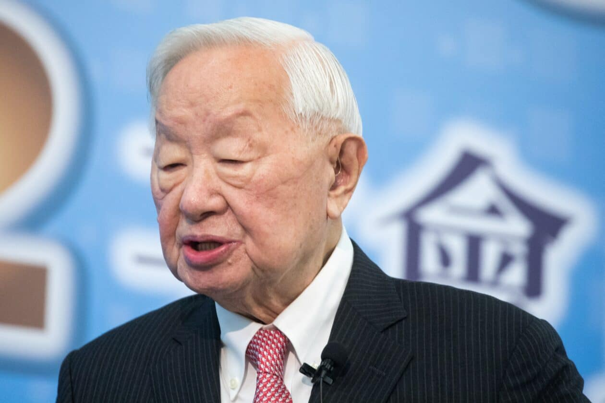
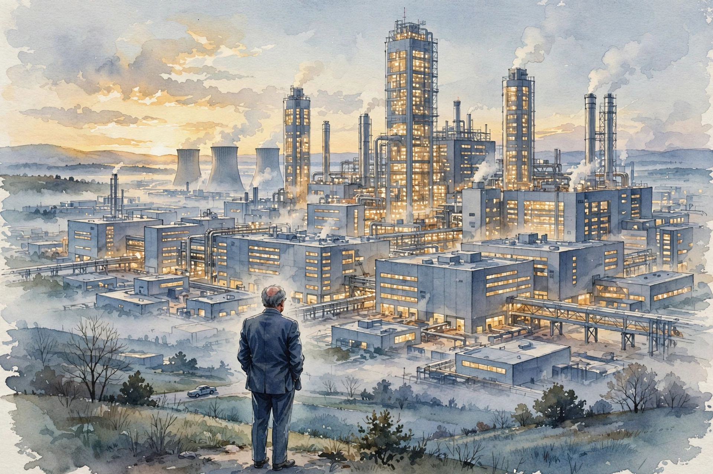
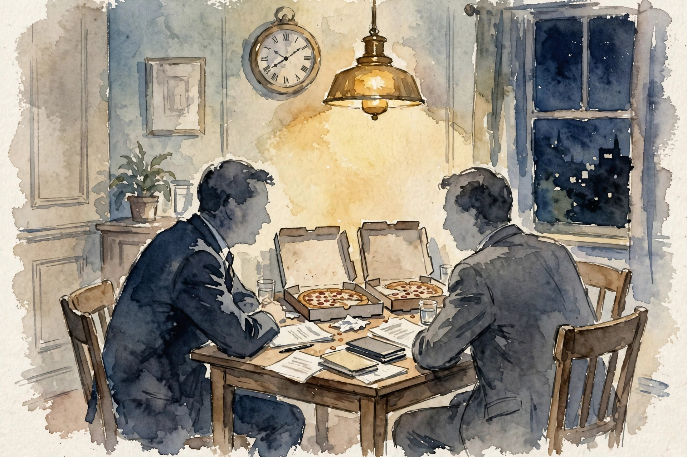
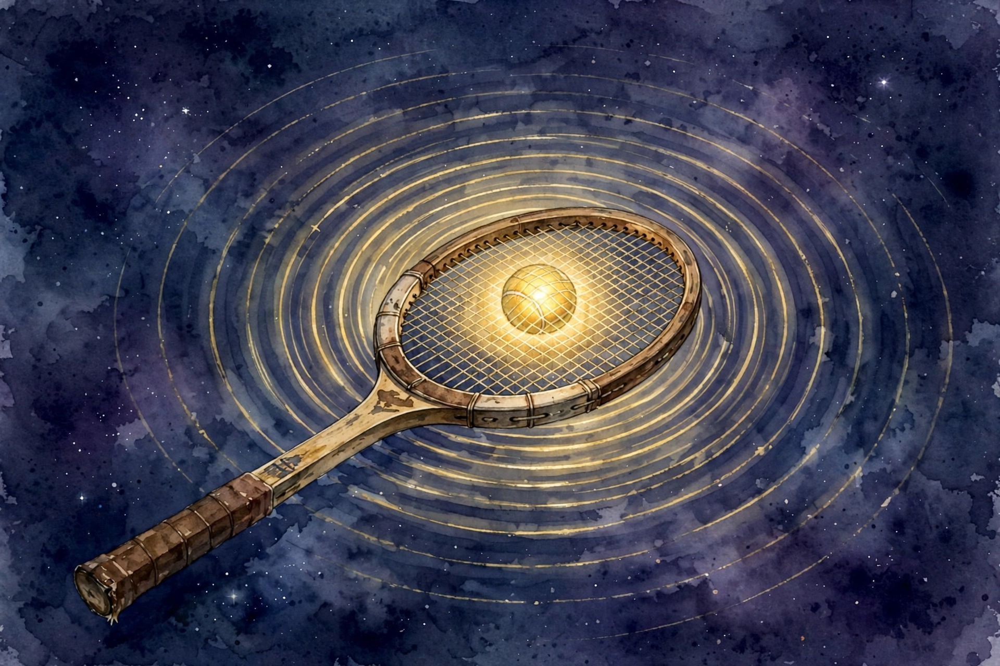

Acquired · Episode 2 · Companion
TSMC Founder Morris Chang
Ben and David flew to Taiwan for a rare English interview with the 93-year-old founder of TSMC. He tells stories from his Chinese-only memoirs: the 1997 letter from Jensen, the 2009 crisis that pulled him back at 78, the 28-nanometer bet, and how TSMC won Apple from Intel.

Photo. Morris Chang, founder of TSMC. Source: macmagazine.com.br.
Watch. The official Acquired episode video (2 hr 21 min). Chapter times below match the official YouTube chapter marks.
The Wisdom Index: every nugget in this companion
- Never be negligent with a future customer
- Do the unglamorous first five years
- Never compete with your customers
- Layoffs are stupid arithmetic
- The 48-hour fair offer
- Fix R and D at 8 percent, end the annual fight
- Take half and borrow
- Why Intel could not be the foundry
- Price at end-game cost
- Combine, do not split
Source fact A claim from the episode transcript. Interpretation My read on what it means. Times marked ~ are proportional estimates from word position, since the transcript has no timestamps.
00:00
Intro: Inventing the Pure-Play Foundry

Illustration. Taiwan, 1987: the pure-play foundry did not exist until Morris built it. AI-generated watercolor.
Source fact Morris founded TSMC in 1987 at age 56. Everyone thought the idea was crazy. The industry was vertically integrated: you designed your chips and you built your own fabs. A company that only manufactured, for anyone who walked in, seemed like a contradiction.
A foundry manufactures chips designed by other companies. A pure-play foundry does only manufacturing and never sells its own chip designs, so it never competes with its customers. An IDM, integrated device manufacturer, like Intel designs and manufactures its own chips.
Morris saw the future before founding. At General Instrument, a founder came asking for a 50 million dollar investment, then called back to say he only needed 5 million. Why? He was not going to build a fab. That was the start for Morris: chip companies without factories, fabless companies, were on the way. Morris says he was within about 12 months of when he thought fabless would arrive.
Don Valentine's line about Sequoia, which Morris quotes:
I had an advantage I knew the future
Don Valentine, quoted by Morris Chang · Episode ~01:43
Morris says he had a glimpse of it.
But the first five-plus years were unglamorous. TSMC's real business was to take other IDMs' least critical, least interesting overflow orders. Ben calls the original business plan kind of bad: rent out spare capacity for anyone's boring chips. Morris does not dispute it. He did the unglamorous business deliberately to build competency, volume, capacity, and literal fabs, so TSMC would stand ready when the fabless revolution arrived.
Nugget 2 · Beginnings
Do the unglamorous first five years
What happened. For five-plus years TSMC lived on other companies' boring overflow orders. Nobody celebrated. Morris ran it that way on purpose to build competency, volume, and fabs.
Why it matters. When the fabless wave arrived, TSMC was the only factory ready. The boring years were the price of being there.
The principle. Serve the unglamorous demand first if it builds the capability the glamorous demand will need.
Nugget 3 · Business model
Never compete with your customers
What happened. The pure-play foundry's founding promise: TSMC manufactures and never designs, so it never competes with the companies it serves. Intel designs chips that compete with its foundry customers' designs.
Why it matters. This single structural choice is why Apple trusted TSMC over Intel decades later. Trust compounds. Conflicts of interest compound faster.
The principle. Design the business so your success never requires your customer's failure. Structure beats reassurance.
00:03:22
1997: The Letter from Jensen
Source fact Morris's relationship with Jensen started with a letter in 1997. Nvidia was four years old, had 50 or 60 employees, and faced bankruptcy. TSMC had a few thousand employees and already passed 1 billion dollars in revenue in 1995. Nvidia approached TSMC's San Jose office and got no answer.
Morris had always told his salespeople never to be negligent with a future customer, even a tiny one, so the silence irritated him. The letter also raised his curiosity. He planned to fly to California the next week anyway. He called Jensen with no advance notice. Jensen picked up himself, background noise of an argument in progress, and shouted to his people to be quiet, because Morris Chang was on the line.
Jensen impressed Morris with articulateness and optimism, and with frankness: Nvidia was in financial difficulty, but the chip he wanted built would not only save the company, it would make Nvidia a major TSMC customer. Major meant at least 50 million dollars a year in TSMC revenue. Morris calls it quite a bold statement from a company that size.
The prediction came true. The chip was a successful games chip, it solved Nvidia's financial problems, and within two or three years Nvidia was one of TSMC's five biggest customers. The partnership has run from that day to the present at immense scale.
Nugget 1 · Customers
Never be negligent with a future customer
What happened. A 50-person company facing bankruptcy wrote a letter. TSMC's San Jose office ignored it. Morris called back personally, because his rule forbids neglecting future customers no matter how small they look.
Why it matters. That letter became the most valuable customer relationship in TSMC's history. The San Jose office's non-answer nearly cost TSMC everything Nvidia later brought.
The principle. Answer the small customer today. You cannot tell which tiny company carries your future biggest account.
00:09:50
2009: The 40-Nanometer Crisis
Photo. A TSMC fab at night. Source: newbloommag.net.
Source fact Morris gave the CEO job to a successor, Rick Tsai, while keeping the chairmanship. In Taiwan, he notes, the chairman is the top person anyway. During those years, TSMC hit a crisis on the 40-nanometer node: manufacturing problems and, worse, quality problems. Yields were low. Yield is the percentage of chips on a wafer that actually work. A yield problem means you pay to manufacture chips you must throw away.
Nvidia was perhaps the biggest customer on that node, and it lost time and money. But the CEO insisted TSMC was not at fault and offered Nvidia nothing. Zero. Morris, watching as chairman, grew impatient. Other problems piled up: pricing fell faster than manufacturing cost, so gross margin kept dropping, and the CEO had laid off 600 to 700 people.
The layoffs violated Morris's deepest management principle, learned at Texas Instruments in the early 1970s. TI's first instinct in a downturn was to lay off by performance rating. Morris was the only one who objected. His argument: performance ratings are subjective. Seven hundred bad ratings come from seven hundred supervisors. Nobody will respect the decision. Worse, the arithmetic fails: separation costs about half a year of pay, and training a replacement takes at least half a year. If you need the people back within a year, the layoff was stupid.
Nugget 4 · Management
Layoffs are stupid arithmetic
What happened. Morris opposed layoffs at TI and banned them at TSMC. Separation costs half a year of pay, retraining takes half a year, and ratings are subjective. A struggling employee got six months of probation instead, and most returned to their jobs.
Why it matters. Under Morris, TSMC essentially never did layoffs. The 600 to 700 layoffs under his successor triggered a protest at his home and pulled him back to the CEO chair at 78.
The principle. Do the arithmetic before the layoff. If you will need the people within a year, the cut is not savings. It is a loan at terrible rates.
00:20:55
The Protest at Morris's Home
Source fact The 600 to 700 laid-off employees came to Morris's home to protest. The company called the police, who sent 50 to 60 officers. Morris had food prepared for 25 to 30 people and served pizza and salad to the protesters in the park. They were thankful, and they told his wife they would not march on the presidential palace that day. Morris warned the previous CEO before the layoffs happened. The episode, he says, precipitated his return.
At 78, in 2009, Morris took the CEO job back.
His first days: he called every major customer, including Jensen. Jensen was friendly but serious: the 40-nanometer quality, delivery, and manufacturing problems were real. Morris said: give me a couple of weeks.
Interpretation The pizza matters more than the protest. Morris fed the people his successor fired. That single act told every TSMC employee which management philosophy was back.
00:29:08
Resolving the 2009 NVIDIA Dispute

Illustration. Salad and pizza at 6:00, business at 8:00: the dinner that settled the Nvidia dispute. AI-generated watercolor.
Source fact Then the famous dinner. Morris invited Jensen to his home at 6:00 for salad and pizza, something they had done many times before. Jensen emailed back: when do we discuss business? Morris answered: 6:30 we eat, 8:00 we go to your home office and discuss business. Ninety minutes of family dinner with no business talk. Then the negotiation.
Morris offered more than 100 million dollars. The offer expired in 48 hours. No bargaining, no arguing. If Jensen refused, they would go to arbitration, which Jensen himself proposed to the previous CEO, who had not even named a number. Morris had spent weeks arriving at the figure and believed it was fair to both sides. Jensen accepted within two days.
Since then, the two companies have done many billions of dollars of business together. Morris included the story in his autobiography because it shows what a long partnership makes possible: a large sum, a hard deadline, and a relationship strong enough to survive both.
Nugget 5 · Negotiation
The 48-hour fair offer
What happened. After weeks of homework, Morris named a number over $100 million, gave Jensen 48 hours, and ruled out bargaining. The alternative was arbitration. Jensen accepted within two days.
Why it matters. The previous CEO offered nothing and named no number. A fair number plus a hard deadline beat endless haggling and saved a partnership worth many billions.
The principle. Do the homework, name the fair number, set the deadline, remove bargaining. Fairness plus finality resolves what haggling cannot.
00:43:04
Going All-In on 28nm

Illustration. 28 nanometers: the sweet spot, like a tennis racket. AI-generated watercolor.
Source fact After fixing 40nm, Morris committed to the 28-nanometer node with everything TSMC had. Two numbers define the bet.
First, R and D at 8 percent of revenue, set by fiat, recession or not. The origin: at Texas Instruments, Morris ran worldwide semiconductors and asked to raise R and D from 4.8 to 5.5 percent. Denied, every time. At TSMC he refused to repeat the annual argument. The company ran 6 or 7 percent, renegotiated yearly between the R and D director and the CEO. Morris said: 8 percent, no negotiation, no annual fight. He calls it the best news the R and D organization ever got. Freed from budget warfare, the engineers started thinking big. Their phrase for 28nm: the sweet spot
, like a tennis racket.
Second, capital expenditure of almost 6 billion dollars in 2010, roughly triple the 2 to 2.5 billion TSMC had spent yearly for the previous decade. Morris calls it a virtuous cycle: secure the R and D budget, the engineers bring bigger ideas, the bigger ideas justify the capex.
At 28nm, TSMC became the clear leader among foundries. Morris dates TSMC's technology leadership to this node.
The 28nm commitment: capex and R and D
Two numbers, both set by fiat. Hover for detail.
Source: Acquired, TSMC founder Morris Chang, @00:43:04. R and D fixed at 8 percent of revenue by fiat, up from 6 to 7 percent renegotiated yearly.
Nugget 6 · Investment
Fix R and D at 8 percent, end the annual fight
What happened. Morris set R and D at 8 percent of revenue by fiat, recession or not, ending the yearly budget war. Capex tripled to almost $6 billion in 2010. The engineers called 28nm the sweet spot.
Why it matters. Freed from budget warfare, the engineers thought big. The mutual feeding of secure R and D and bigger ideas made TSMC the foundry leader.
The principle. Fix the investment rate and remove the negotiation. Certainty of funding buys boldness of thought.
00:52:05
Meeting Apple and Jeff Williams
Source fact The Apple story starts with a surprise dinner. Terry Gou, the founder of Foxconn and a second cousin of Morris's wife Sophie, called to say he would come to dinner and bring an Apple vice president. Morris assumed it would not be an ordinary VP. At 8 p.m., Jeff Williams walked in. He was Apple's chief operating officer.
Williams barely made small talk. He talked 80 percent of the dinner. His pitch: Apple wanted TSMC to make iPhone wafers. On economics, he said Apple would let TSMC have 40 percent gross margin. Morris said nothing at the time, but his thought was: we are already at 45 percent, and I want 50.
The surprise: Apple did not want 28nm. It wanted 20nm, a half step. In Moore's-law progression, 28 was supposed to go to 16. A half step is a detour: TSMC would spend effort on 20 that would help 16 later, but it would delay 16, and at the time TSMC's R and D could not do two nodes at once. The cost of the detour: on the order of 10 billion dollars over the next few years. And TSMC planned its 28nm capex without Apple in mind. Apple was a pure surprise on top.
So Morris did the financial planning. Options: cut the dividend, sell new stock, borrow, or take only part of Apple's order. He planted a relationship with Goldman Sachs early in TSMC's life and even served on Goldman's board, so high-level advice was a phone call away. Decision: keep the dividend, sell no stock, borrow billions, and take half of what Apple said it needed. His reasoning on the half: customers have no skin in the game when they state demand. They will happily take your billions in capacity and leave you holding it.
C.C. Wei, the business development director, first carried the half message to Apple's purchasing people. Their answer: you must be crazy. Morris went to Cupertino himself and told Jeff Williams: after prudent financial planning, we will issue corporate bonds and take half. Williams's only suggestion was to eliminate the dividend. Morris refused. About a third of TSMC's shareholders cared seriously about dividends, and cutting would crash the stock. Williams let it lie. The deal was set.
Toy: take half or take all?
Morris's dilemma as a machine. The learning curve says take everything for maximum volume. Survival says take half. Move the slider and see his logic.
Nugget 7 · Risk
Take half and borrow
What happened. Faced with Apple's surprise 20nm order, Morris kept the dividend, sold no stock, borrowed billions, and took half of Apple's stated demand. Customers have no skin in the game when they state demand.
Why it matters. The learning curve says take it all for maximum volume. But if iPhone demand misses by 5 or 10 percent, the node's profitability collapses and the next node goes unfunded. Half was the compromise between the curve and survival.
The principle. Size the commitment to your forecast error, not your forecast. The customer states demand with your money.
01:36:01
Why Intel Could Not Be the Foundry
Source fact In February 2011, Jeff Williams called: pause discussions for two months. The highest level of Intel approached Tim Cook about making Apple's chips. Morris was not worried. In the 1990s, hearing Intel's name made competitors tremble. By 2011, Intel was no longer that name.
Morris's read of what Apple wanted: technology at parity with Intel, which he believed TSMC reached or passed, and customer trust. He knew Intel's customers in Taiwan, the PC makers. None of them liked or trusted Intel. Intel always acted like the only supplier. And Intel had a structural conflict: it designs chips that compete with its foundry customers' designs.
A month later Morris visited. Williams was away and had Tim Cook meet him instead, an unusual upward delegation. Cook took him to the Apple cafeteria, they carried their trays back to Cook's office, and Cook said:
there's nothing to worry about because Intel just does not know how to be a foundry
Tim Cook to Morris Chang · Episode ~01:38
Interpretation Morris's interpretation: a foundry must respond to every customer request, even the crazy and irrational ones, courteously. Intel had never learned that. The pure-play promise, never compete with your customers, was the trust Apple bought.
Nugget 8 · Trust
Why Intel could not be the foundry
What happened. Apple paused TSMC talks to hear Intel's pitch, then chose TSMC. Cook's verdict: Intel does not know how to be a foundry. Intel's own customers did not trust it, and its chip designs compete with its foundry customers.
Why it matters. Technology was at parity. Trust decided. Thirty years of never competing with customers became the decisive asset in the biggest deal in foundry history.
The principle. Structure your business so customers never have to wonder whose side you are on. Then let time prove it.
01:46:45
The 20nm Detour and the Pricing
Source fact Pricing was settled separately, after homework on costs and yields. When it closed, Morris invited Williams to a three-star Taipei restaurant. Williams joked: if you had not liked the pricing, we probably could be going to a McDonald's
.
The tradeoff was real. TSMC spent the billions on 20nm, which delayed 16nm. Samsung skipped 20, went straight to 16, and won Apple's first 16nm orders. Morris describes the shock plainly: TSMC invested tens of billions on the bet that 80 to 90 percent of its 20nm equipment would convert to 16. If Apple bought 16 from Samsung, where did that leave TSMC? He emailed Williams immediately. Williams replied: do not worry, I will be in Taiwan next week to explain. He came, and he said: as soon as you are ready with 16, we will buy all our needs from you. Half a year later TSMC had its own 16nm, and most of Apple's 16nm business stayed with TSMC.
The world semiconductor market since TSMC's founding
Moore's law as a demand law: the world wants roughly twice the computing power every two years. Hover for detail.
Source: Acquired, TSMC founder Morris Chang, episode figures cited by Ben and David.
~01:58
The Learning Curve
Source fact Morris did not invent the learning curve, but he refined it into a weapon at Texas Instruments. The simple version: as you make more of anything, unit cost falls. Bruce Henderson, the founder of the Boston Consulting Group, brought the theory to TI around 1970 with Bill Bain. Morris was TI's guy.
Morris's warning: anyone who takes the simple explanation and thinks that is all there is knows nothing. The real learning curve is a strategy. The goal is to be the largest-volume player at the end of the game, because this is a fixed-cost business and the winner spreads fixed costs over the most customers. So you price early at where costs will be at the end. You cut prices aggressively, even starting unprofitable on a new node, to win the volume that drives you down the curve fastest.
A fab costs 20 billion dollars today and will cost 40, 80, 100 billion. Almost nobody else can deploy that. TSMC's capex grows alongside its net income, and on top of that it funds separate R and D for the next node. Add proprietary packaging like CoWoS for AI chips, which makes it even harder for customers to dual-source, and the leader pulls away every year.
Nugget 9 · Strategy
Price at end-game cost
What happened. TSMC prices early at where costs will be when the node matures, even starting unprofitable, to win the volume that drives costs down fastest. The fixed-cost game goes to the largest-volume player.
Why it matters. This is why the industry ends with a dominant player. Of course the company that takes all the orders gets the lowest price. The curve rewards the bold and punishes the hesitant.
The principle. Work backward from mature demand. Price for the end of the curve, then run down it faster than anyone else.
~02:05
Combine, Do Not Split
Source fact Rick Tsai, the CEO between 2005 and 2009, split operations into advanced technology and mainstream technology, each with its own small business development group. Morris never thought the split was a good idea. When he returned, he recombined them: about 10,000 people in advanced, 7,000 to 8,000 in mainstream.
The mainstream group is the old fabs finding customers who do not need the leading edge: automotive, sensors, replacement parts. It is the institutional form of the keep-every-generation-running philosophy. TSMC still runs fabs 2 and 3 from the late 1980s. On an accounting basis they are fully depreciated, so they generate nearly free high-margin revenue.
He had fought the same battle in 1996, when McKinsey proposed a functional organization. Asked to name one big functional company, McKinsey answered Boeing. Morris's reply: Boeing has commercial and government divisions, not a 707 division and a 747 division. Splitting by fab would be like splitting Boeing by airplane model.
On C.C. Wei: Morris once offered him the business development job to round him out as an executive. Wei had 10,000 people reporting to him and balked at a 60-to-70-person department. Morris's analogy: Kissinger had a couple hundred people as National Security Advisor while the Secretary of State had thousands worldwide. Power is not headcount. Wei took the job, and he is now TSMC's chairman and CEO.
Nugget 10 · Organization
Combine, do not split
What happened. Morris recombined the split advanced and mainstream operations into one, and kept every fab generation running. Old fabs, fully depreciated, print high-margin revenue on automotive and sensor demand.
Why it matters. Splitting by technology node fragments the learning curve. One organization learns once and applies everywhere. Keeping old fabs running turns sunk cost into free cash flow.
The principle. Organize around the customer, not the technology generation. Power is not headcount.
~02:12
What Morris Never Compromised
Source fact Two through-lines. First, never compete with your customers. It is the pure-play foundry's founding promise, and it is why Apple trusted TSMC over Intel. Second, never be negligent with a future customer. The San Jose office ignoring Nvidia's 1997 letter is the cautionary tale inside the success story.
On margins, Morris is philosophical. TSMC earns mid-50s gross margins today. He retired just short of 50, still pushing. Its customers earn 70 to 80. Pricing, he says, comes down to cost plus what the customer will accept. Value is created jointly. The split is negotiated, and it is personal to each CEO.
The episode in seven lines
- Answer the small customer. The 1997 letter became the most valuable relationship in TSMC history.
- Do the boring years. Five years of overflow orders built the factory the fabless wave needed.
- Never compete with your customers. Structure beats reassurance. Apple chose trust over Intel.
- Name the fair number and the deadline. A $100M offer with 48 hours beat haggling.
- Fix the investment rate. Eight percent R and D by fiat ended the annual budget war.
- Size commitments to forecast error. Take half, borrow, keep the dividend.
- Price at end-game cost. The learning curve rewards whoever runs down it fastest.
Distilled from Acquired, TSMC founder Morris Chang, Jan 2025. Full episode: youtube.com/watch?v=FZItbr4ZJnc. Chapter times match the official YouTube chapter marks.
~02:18
Outro
Source fact The episode closes with the post-game: Ben and David's analysis after crossing the ocean. The idea that keeps sitting with them is the genius in hindsight of not competing with your customers, the dedicated pure-play foundry. They saw the original pitch in the TSMC Museum of Innovation: the original slide deck Morris pitched to the Taiwanese government. Then the carve-outs and the sign-off.